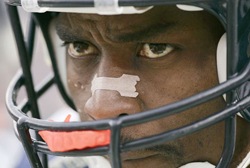

Rod Smith Retires
Posted July 27 2008 10:19PM by Michael
It has been an inevitable event for the last couple of years of injury, but Rod Smith has finally decided to retire. This officially robs me of my favorite athlete of my young life. I remember proudly wearing my Rod Smith jersey to middle school for the Super Bowls. I still am waiting to find a discount for an authentic Rod Smith Denver Broncos jersey, but someday I am sure I will give in. For more information on how this occurred, let me direct you to the tale of a young child.
Now I know what you must be thinking: who are my remaining favorite players? The answer to that is simple.
- Basketball: Deron Williams
Played at Illinois, is a beast. Even gets me cheering for the Jazz (and actually got me to watch NBA games). I used to have Richard Hamilton as a favorite player in his Wizard days, but ever since he became a Piston we have drifted apart. His game is exactly like how I would ideally play, minus the whole part about him being in shape.
I can also proudly say that I actually bought a Beckett graded rookie card (probably the plainest looking one around, nothing special about it whatsoever) when he was terrible his rookie year. Last time I checked there were 59 cards graded 9.5 and I had the only 10.
- Football: Arrelious Benn
Playing at Illinois, is also a beast. Great timing as the torch was passed to him from Rod last year. I actually planned my day around his college announcement on that cold November day.
- Baseball: None
I wanted to force someone like Troy Tulowitzki or Carlos Marmol here, but I just can't. I'm not all that sure I've ever had a 'favorite' baseball player.